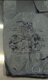

Segundo o secretário Simão Pedro (Serviços), também estão sendo preparados novos modelos de sacolas nas cores marrom e cinza, adequadas ao descarte de lixo orgânico para compostagem e de inservíveis, resíduos que não podem ser reciclados.
Vantagens:- Facilita o manejo nos aterros
- Menos nocivas ao meio ambiente
- Distribuição gratuita

A nova sacolinha verde será usada pelo consumidor para carregar as compras e depois deverá ser reutilizada para descartar o lixo reciclável, que será enviado a uma das centrais de triagem mecanizadas ou manuais, nas cooperativas.
Vantagens:- É feita de cana-de-açúcar
- É Renovável
- Suporta até 10 quilos